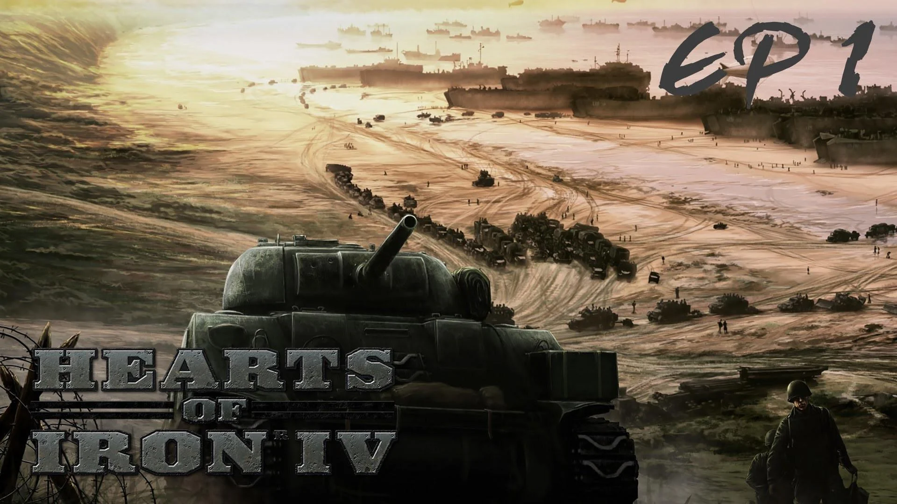

© Andrei Bertescu


 printați
printați
+40 725 099 253 |
andrei.bertescu2@gmail.com |
● Jocurile de strategie în timp real
Strategia în timp real (RTS) este un subgen al jocurilor video de strategie care nu progresează treptat pe rând, dar permit tuturor jucătorilor să joace simultan, în „timp real”. În schimb, în jocurile de strategie pe rând (TBS), jucătorii se joacă pe rând. Termenul „strategie în timp real” a fost inventat de Brett Sperry pentru a comercializa Dune II la începutul anilor 1990.
Într-un joc de strategie în timp real, fiecare participant poziționează structuri și manevrează mai multe unități sub controlul lor indirect pentru a securiza zonele hărții și/sau pentru a distruge bunurile adversarilor. Într-un joc tipic RTS, este posibil să se creeze unități și structuri suplimentare, în general limitate de o cerință de a cheltui resursele acumulate. Aceste resurse sunt, la rândul lor, obținute prin controlul punctelor speciale de pe hartă și/sau deținerea anumitor tipuri de unități și structuri dedicate acestui scop. Mai precis, jocul tipic din genul RTS include colectarea de resurse, construirea bazei, dezvoltarea tehnologică în joc și controlul indirect al unităților.
Sarcinile pe care trebuie să le îndeplinească un jucător pentru a câștiga un joc RTS pot fi foarte solicitante, iar interfețele de utilizator complexe au evoluat pentru ei. Unele caracteristici au fost împrumutate din mediile desktop; de exemplu, tehnica de „clic și glisare” pentru a crea o casetă care selectează toate unitățile dintr-o zonă dată. Deși unele genuri de jocuri video au similarități conceptuale și de joc cu șablonul RTS, genurile recunoscute nu sunt, în general, incluse ca jocuri RTS. De exemplu, jocurile de construire a orașului, simulările de construcție și management și jocurile de tactică în timp real nu sunt, în general, considerate strategie în timp real în sine. Acest lucru s-ar aplica numai pentru orice este considerat un joc de zei, în care jucătorul își asumă un rol de creație asemănător unui zeu.
Istoria jocurilor RTS
Genul de strategie în timp real a fost relativ stabil din 1995. Adăugările la conceptul genului în jocurile mai noi tind să sublinieze mai mult elementele de bază RTS (limite mai mari ale unităților, mai multe tipuri de unități, hărți mai mari etc). Mai degrabă decât inovațiile la conceptul de joc, jocurile noi se concentrează, în general, pe rafinarea aspectelor predecesorilor de succes. Ca exemplu de rafinament al gameplay-ului, aclamatul Total Annihilation al lui Cavedog din 1997 a distilat mecanismele de bază ale Command & Conquer și a introdus primul Unități 3D și teren în jocuri de strategie în timp real. Concentrarea Age of Empires pe contextul istoric și avansarea în vârstă a fost rafinată și mai mult de continuarea sa, Age of Empires II: Age of Kings și de Empire Earth de la Stainless Steel Studios în 2001. Seria GSC Game World's Cossacks: European Wars a preluat genul în o direcție diferită, aducând limitele populației la zeci de mii.
Dungeon Keeper (1997), Populous: The Beginning (1998), The War of the Worlds de Jeff Wayne (1998), Warzone 2100 (1999), Machines (1999), Homeworld (1999) și Dark Reign 2 (2000) au fost printre primele titluri de strategie complet 3D în timp real. Homeworld a fost remarcabil prin faptul că prezenta un mediu 3D în spațiu, permițând, prin urmare, mișcarea în toate direcțiile, o caracteristică pe care continuarea sa, Homeworld Cataclysm (2000) a continuat să o construiască prin adăugarea de caracteristici precum puncte de referință. Homeworld 2, lansat în 2003, a simplificat mișcarea în mediul 3D de 360°. În plus, Machines, care a fost lansat și în 1999 și a prezentat un mediu 3D de aproape 100%, a încercat să combine genul RTS cu un gen shooter în prima persoană (FPS), deși nu a fost un titlu deosebit de reușit. Aceste jocuri au fost urmate de o scurtă perioadă de interes pentru jocurile experimentale de strategie, cum ar fi Allegiance (2000). Războiul lumilor al lui Jeff Wayne a fost remarcabil pentru că a fost unul dintre puținele jocuri RTS complet neliniare existente vreodată.
Gameplay-ul
Într-un joc tipic de strategie în timp real, ecranul este împărțit într-o zonă de hartă care afișează lumea jocului și terenul, unitățile și clădirile și o suprapunere a interfeței care conține comenzile de comandă și producție și, adesea, o prezentare generală „radar” sau „minimată” a întreaga hartă. Jucătorul primește de obicei o perspectivă izometrică a lumii sau o cameră de roaming liber din punct de vedere aerian pentru jocurile 3D moderne. Jucătorii derulează în principal pe ecran și emit comenzi cu mouse-ul și pot folosi, de asemenea, comenzi rapide de la tastatură.
Jocul constă în general în poziționarea jucătorului undeva pe hartă cu câteva unități sau o clădire capabilă să construiască alte unități/cladiri. Adesea, dar nu întotdeauna, jucătorul trebuie să construiască structuri specifice pentru a debloca unități mai avansate în arborele tehnologic. Adesea, dar nu întotdeauna, jocurile RTS necesită jucătorului să construiască o armată (de la echipe mici de cel mult 2 unități, până la sute de unități) și să le folosească fie pentru a se apăra de o formă virtuală de atac uman, fie pentru a eliminați inamicii care posedă baze cu capacități de producție unitare proprii. Ocazional, jocurile RTS vor avea un număr prestabilit de unități pe care jucătorul le poate controla și nu permit construirea altora suplimentare.
Cele mai mari jocuri RTS:
|  |